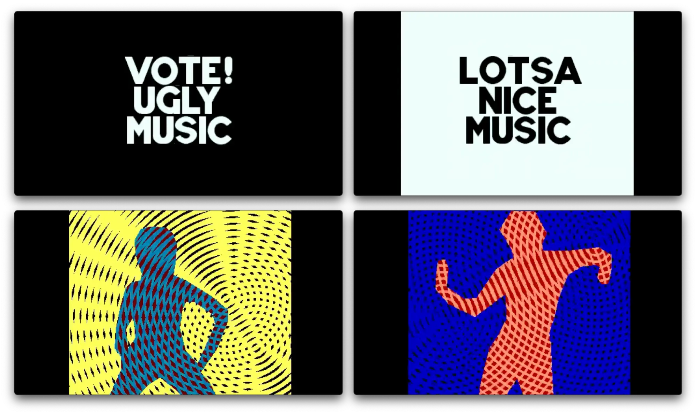
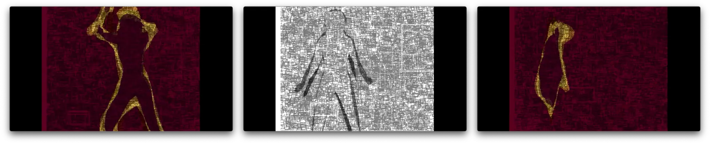
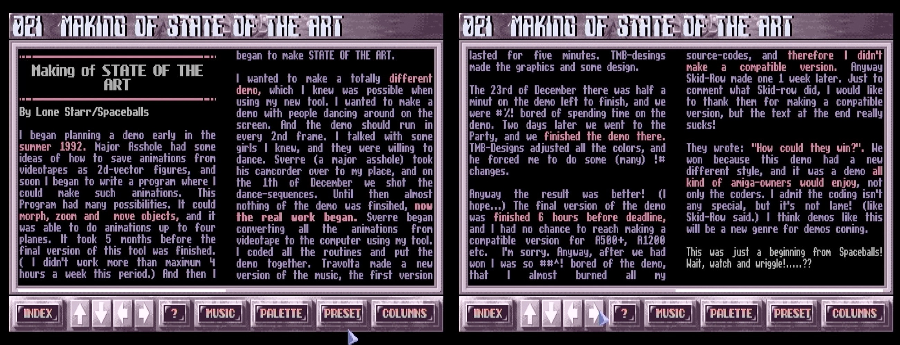

Demo Beats and MTV Vibes
History and Analysis of State of the Art by Spaceballs
Let's take a detailed look at "State of the Art", a groundbreaking demo for the Commodore Amiga created by the Norwegian demogroup Spaceballs, released in 1992. This demo gained widespread acclaim for its innovative use of real-time 2D vector graphics, animation, and sound, becoming an iconic piece in the history of the Amiga demoscene.
January 2024
Demo Profile
Platform: Commodore Amiga 500
Video Capture:
https://youtu.be/89wq5EoXy-0
Duration: 4 Minutes 12 Seconds
Released at: "The Party II" Denmark
(Christmas 1992)
Award: First Prize in the category Amiga
Demo
Created by: Spaceballs
Code: Lone Starr and Major Asshole
Music: Travolta
Graphics: Tmb Designs
Demo Group Infos:
https://demozoo.org/groups/3/
Imagine storing a full music video with music and graphical effects on a single 3.5" disk in the Amiga format that had a capacity of 880KB. This is what the "State of the Art" demo was. A full MTV quality music video executed in realtime on a forty year old machine, the Commodore Amiga with 7.16 MHz and half a Megabyte of RAM.
One of the most striking aspects of this demo is its use of animated vector sequences converted from real-life video footage. Rendering images using geometric shapes like lines and curves.
Before we start, a quick reminder, what demos are. They are non-interactive realtime multimedia presentation created by hobbyist enthusiasts, primarily to showcase their programming, graphical, and musical skills, often pushing to the limits of the hardware’s capabilities.
And now we'll take a look at a video recording of the "State of the Art" demo by Spaceballs on Youtube.
A video capture of the "State of the Art" demo by Spaceballs in all its glory.
When the audience at the demoparty "The Party" in 1992 saw the "State of the Art" demo on the Commodore Amiga, they were blown away. It looked like a freaky, avantgarde music video that would not have been out of place on MTV. The Norwegian demogroup Spaceballs combined real-time 2D vector graphics, animation, and sound in their demo.
Spaceballs musician included a driving, energetic electronic soundtrack that blends elements of techno and chiptune styles in the demo. It has fast tempo, rhythmic beats, and the use of synthesizer sounds that were typical of the era.
Analysing the Audio-Visual Art
"State of the Art" was presented to the demoscene in 1992 at a demoparty in Denmark. This is an event where enthusiasts and creators in the demoscene community gather to share, celebrate, and compete in creating demos. A group of teenagers from Norway created the "State of the Art" demo. They called themselves Spaceballs, just like the Mel Brooks pastiche of Star Wars from the 1980s. The demo blew the minds of the audience. It not only won the hearts and minds of the participants but was awarded first prize in the category Amiga Demo.
And now a deep dive into the different sections of the demo...
1. Demo Intro
The demo starts with the Spaceballs logo, followed by the title "State of the Art" appearing on the screen. The text is presented in a stylized, futuristic font that sets the tone for the rest of the demo.
2. Dancing Silhouettes
The first main scene features silhouettes of dancers in various poses. The dancers are represented by 2D vector graphics, with their movements being smoothly animated. The animation is synchronized to the electronic music track, creating an immersive audiovisual experience.
3. Rotating Objects
This scene showcases rotating 2D objects, such as stars and triangles. The objects morph and change shape as they rotate, demonstrating the capabilities of the Amiga's graphics hardware.
4. Spiraling Patterns
In this scene, the demo displays spiraling patterns that continuously morph and change shape. These intricate patterns are rendered in real-time and are synchronized with the pulsating electronic soundtrack, providing a mesmerizing visual experience.
5. Waveform Visualizer
The demo features a waveform visualizer that responds to the beats and frequencies of the music track. The waveforms are rendered as white lines on a black background, creating a mesmerizing, dynamic effect that adds another layer of depth to the audiovisual experience.
6. Wireframe Cityscape
A 3D wireframe cityscape is presented, with buildings and structures appearing to be drawn in real-time. This showcases the Amiga's ability to render complex 3D scenes.
7. Kaleidoscope
This scene features a kaleidoscope effect, with the screen filled with an ever-changing array of symmetrical patterns. The patterns react to the music, creating a hypnotic and synchronized audiovisual experience.
8. Dancers Reprise as Oulines
The dancers from the earlier scene return, this time with new poses and animations. Their movements continue to be synchronized to the music, further emphasizing the tight integration of visual and auditory elements in the demo.
9. Credits and Greetings
The demo concludes with a credits sequence, acknowledging the individuals responsible for the creation of "State of the Art." The names of the group members and their roles are presented in a stylish font, accompanied by greetings to other demoscene groups and individuals.
The original version of "State of the Art" that was released at the demoparty only ran on an Amiga 500. It crashed on an Amiga 1000 and 1200. So weeks after the release, a demogroup called Skid-Row debugged and corrected the demo to make it run on other models of the Amiga.
While debugging the demo and implementing the fix, Skid-Row took the opportunity to add a disrespectful comment (or "dis") to the final screen saying:
How could this demo win????? Lame programming and useless trackloader"
This was, of course, a friendly taunt.
Reviews by Demosceners and Competitors
When Spaceballs released "State of the Art", the demo was well-received. Some demoscener lauded the amazing graphics, the realistic dancing sillhouettes, the length of the demo and the pumping music. It deservedly won.
But there were also critical voices. Some didn't think that it acted more like a prerecorded animation and not like a demo. Others didn't like the techno music.
In the years since its release, "State of the Art" has risen in recognition to a reverential level. Not only Amiga enthusiasts sing it praise on the demo's page on pouet.net but also fans of modern systems.
Here is an interesting comment by Hannibal, a member of the demogroup Anarchy who came in second with their work on 3D-DEMO 2 at the demoparty The Party II where "State of the Art" won first prize in the category Amiga demo. User "Hannibal" on January 3, 2016:
I didn't like it at the time because it didn't feel like a "real demo". In hindsight it was a great demo that expanded what a demo could be.
(I also didn't like it because it beat my own demo :-)
Here are some of the other reactions and comments.
User "analogue" on Juli 28, 2000:
One of the best demo ever released.
User "sin" on August 21, 2000:
How can a kid get into a party and turn the scene upside down with a demo? Wanna find out? get you emus ready, or better kickstart the real thing and watch this prod. No wonder it's a classic, a trend setter. Ever seen dazing vectorised babes on a demo? See where it all started.
User "Trauma Zero" on May 31, 2001
Mother of all demos...Simply beautifull, music rocksss !!!!!!!!!
User "alexkidd" on August 6, 2001
I'm not really a oldschool aficionado, but this demo is one of my favourite. Simply a great idea with a very good code to make it possible.
User "VindicatioN" on August 16, 2003
Often heralded as the greatest Amiga demo ever made (good arguments for and against both ways), it sure made a *huge* impression when it came out over 10 years ago.
My friend invited me over to his house at the time to check out this "amazing new Spaceballs demo" he had just downloaded. I had a 386/33 PC at the time, and the demoscene was virtually nonexistent on that platform, so when he popped this in and the purple girl silhouettes appeared, with the Vinnie-tracked loadertune (basic, but effectively gets you in the mood for what's to follow), I knew I was about to see something great. Just the way the screen cycled from white to purple, scaling out to reveal a hand was really cool. Even though there's nothing all that special about the effects, their execution is top-notch, and well-synched. Using ancient interference effects with the (what I'm guessing is) rotoscoped dancing animations, along with one of Travolta's most memorable tunes, combined to create an experience that was tough to match at the time.
A comment most often heard was that it was good enough to put on MTV. Seeing it today on bigger monitors, I always feel like that final strobe sequence is going to give me a seizure. üòÜ
Definitely a classic, and deserving of a:
Maybe the level of hyperbole in most of the overwhelmingly positive comments there is exaggerated and unwarranted. There are other great demos of the same vitage on the Amiga e.g. "Hardwired" by Crionics and The Silents (1991), and "Desert Dream" by Kefrens (1993). And the 2000s brought a large variety of beatiful and remarkable demos by demo groups like Farbrausch and Fairlight. But all the exuberant praise for "State of the Art" is an expression of true admiration and enthusiasm
Some of the scathing reviews in Spaceballs' own diskmag R.A.W.
One of the negative reviewers even speculated that Spaceballs' "State of the Art" might have been inspired by a slightly similar demo on the Amiga called "Deformations" which was released in the spring of the same year at the Polish demoparty Warszawa 1992. It was also awarded first place. It has a very different nature but also features silhouettes of dancers to sampled music with vocals.
"Deformations" by Deform (1992)
Shine on, you crazy Spaceballs: Other Works
Spaceballs is probably Norway's oldest existing demogroup. They still active today and have a large repertoire. Their page on pouet.net lists around a hundred productions (including their diskmags) over more than two decades.
Beside "State of the Art", their most notable demos are: "9 Fingers" and "Wayfarer".
9 Fingers (1993)
A year after "State of the Art", Spaceballs released the impressive demo called "9 Fingers" (see pouet.net). It came in fourth at "The Party" in 1993. This time they asked two of their female friends to dance and filmed them with a video camera.
"9 Fingers" by Spaceballs
The original footage of the dancing ladies in "9 Fingers" can still be found in the Youtube documentary "Two Women that changed the Amiga Demo scene".
The documentary "Two Women that changed the Amiga Demo scene" on Youtube
Wayfarer (1992)
In 1992, Spaceballs released "Wayfarer" at "The Gathering" demoparty (April 15 - 19 1992). It won first prize at the party (see demo entry on pouet.net).
"Wayfarer" by Spaceballs
R.A.W. Diskmag (1991 - 1995)
Individual Members of group have been very active in the demoscene community, participating in and sometimes organizing demoparties and other community events. In the 1990s, Spaceballs also released nine issues of the diskmag “R.A.W” (short for “Random Article Writer”).
A diskmag is an electronic magazine distributed on a floppy disk. They are written, edited and distributed by enthusiasts in the scene. Some diskmags are simply text files with some rudimentary diagrams composed of letter characters (ASCII art). Others are complete applications with artful user interfaces, virtual pages with formatted text and graphics. It was good form for many diskmags in the demoscene to start with intros that presented graphics, effects and music. The more elaborate demoscene diskmags had accompanying tracks of new music playing in the background while users read the articles.
This is what Daniel Botz wrote about diskmags in his doctorial thesis "Kunst, Code und Maschine. Die Ästhetik der Computer-Demoszene" (translated by the writer of this piece):
"Since its early days, the scene has had its own publication media such as 'Diskmags', short for 'Disk Magazines', also called Scene Mags or Diskzines. These journalistic products contain information about the founding, dissolution and restructuring of demo groups, reports from demo parties or reviews of new demos. While these products are part of the scene and therefore an object of study, they also serve as important sources of information, for example for dating demos. While the first important scene magazine, 'Illegal' from Germany, was still published on paper, the later Diskmags appeared like demos in disk form and were exchanged and copied in parallel with demos and software." [1]
Spaceballs pushed the boundaries of what was possible in demo programming on the Amiga. They are electronic artists of the underground. Their work has influenced many other demoscene groups and individuals, inspiring new techniques and styles. Beyond technical prowess, Spaceballs' demos are known for their distinctive artistic style, often featuring bold colors, innovative graphics, and synchronized music. The music in their demos is an integral part of the experience, often driving the pace and mood of the visuals.
Spaceballs' contribution to the demoscene goes beyond just their technical achievements; they have been a part of shaping the culture and artistic expression within the community, inspiring generations of programmers, artists, and musicians within the demoscene and- beyond.
Years later two other demosceners even recreated the demo on the PC using purely character-based ANSI art.
An MS-DOS recreation of "State of the Art" using only ANSI characters by Pulpe and Saturne (1997).
Creating the Demo
Now it is time to delve into the demo's history, which starts in the past, because that is how history works, and the demo was created in the summer of 1992 (which happens to be in the past).
Over the years, Spaceballs had an ever changing roster with many different members, but this particular demo was created by Lone Starr, Major Asshole, Travolta and TmbDesign.
The group used a video camcorder to record two girls of approximately their age who were dance enthusiasts. They would use this footage as the basis for the dancing figures. But getting there was not easy.
Lone Starr and Major Asshole were the coders. Lone Starr programmed a tool to painstakingly and manually trace the dancing silhouettes frame by frame.
The article in R.A.W. diskmag with the "making of" the demo.
The Amiga could display the video footage. This was not an actual import in the sense that we would understand it today. The footage would only be displayed in the background on the Amiga's screen using the machine's Genlock feature [2]. Normally this could be used for titling videos by superimposing the computer's image over video footage and then recording that on a separate tape.
This time, Major Asshole used the footage to trace the outlines of the dancer as vector paths. This was slow and laborious. Yet once the clips had been traced, Major Lone Starr and Asshole could fill the outlines with any color they wanted. They could scale the vector images, rotate them and flip them. This process of tracing the outlines of a figure on video or film is called rotoscoping.
Travolta composed and coded the spectacular music of the demo. It's pulsating beats were very on point for the early 1990s, often compared by other with the industrial techno music popular in Germany. Tmb Design provided the spot illustrations and incidental graphics.
Here is an excerpt from Spaceballs' R.A.W. diskmag describing the "making of" the demo:
I began planning a demo early in the summer 1992. Major Asshole had some ideas of how to save animations from videotapes as 2d-vector figures, and soon I began to write a program where I could make such animations. This program had many possibilities. It could morph, zoom and move objects, and it was able to do animations up to four planes. It took 5 months before the final version of this tool was finished. (I didn't work more than maximum 4 hours a week this period.) And then I began to make STATE OF THE ART.
I wanted to make a totally different demo, which I knew was possible when using my new tool. I wanted to make a demo with people dancing around on the screen. And the demo should run in every 2nd frame. I talked with some girls I knew, and they were willing to dance. Sverre (a major asshole) took his camcorder over to my place, and on the 11th of December we shot the dance-sequences. Until then almost almost nothing of the demo was finished, now the real work began. Sverre began converting all the animations from videotape to the computer using my tool. I coded the routines and put the demo together. Travolta made a new version of the music, the first version lasted for five minutes. TMB-designs made the graphics and some design.
The 23rd of December there was half a minute of the demo left to finish, and we were #%! bored of spending time on the demo. Two days later we went to the Party, and we finished the demo there. TMB-Designs adjusted all the colors, and he forced me to do some (many) !# changes.
Anway the result was better! (I hope...) The final version of the demo was finished 6 hours before deadline, and I had no chance to reach making a compatible version for A500+, !1200 etc. I'm sorry. Anyway, after we had won I was so ##^! bored of the demo, that I almost burned all my source-codes, and therefore I didn't make a compatible version. Anyway Skid-Row made on 1 week later. Just to comment what Skid-Row did, I would like to thank them for making a compatible version, but the text at the end really sucks!
They wrote: "How could they win?". We won because this demo had a new different style, and it was a demo all kind of amiga-owners would enjoy, not only the coders. I admit the coding isn't any special, but it's not lame! (like Skid-Row said.) I think demos like this will be new genre for demos coming.
This was just a beginning for Spaceballs! Wait, watch and wriggle!.....??
Beyond their own coverage of the demo's creation, members of Spaceballs were even interviewed by the "It's Art" magazine from the US about their motications and process. Unfortunately, this was a printed niche periodical with a low circulation and I could not find it anywhere. The only excerpts remain in a preview of the issue on the Web Archive:
In 1992, Amiga ruled the demo scene, but State Of The Art caused a true earthquake in the demos group community and all its fans. While most part of demos introduced technical parts trying to put forward feats of programming which could be annoying for the non-initiating, State of The Art erased the programming aspect to accomplish a visual assemblage worthy of the best dance video clips from this time ...
The demogroup's own website can still be found on the web at https://spaceballs.untergrund.net/. By the looks of things, the contents has not been updated since the early 2000s. Spaceballs provide a short history of their team and their work here: https://spaceballs.untergrund.net/history.html
The Spaceballs site is still available on the web.
We can also still find an interview with one of the dancers Jannicke on the website, an excerpt from Spaceball's R.A.W. diskmag. Here are some excerpts from the interview in R.A.W. #5 (May 1993):
How long time did you use to records the dancing?
Since we are so marvelous dancers we only used one hour.
(Comment: She won a norwegian championship in disco dancing years back.)Which music did you listen to while recording?
We listened to the same as in the demo.Are you a fan of techno music?
Not really. I am quite fond of Indian music. The cure, DM and so on.What do you think about the result of the demo?
Not bad. Paul is a very clever boy.What do you think about the music in the demo?
It's alright! But it is a bit fast at the end!
A profile of the dance featured in the demo.
(Source:
screenshot from R.A.W. #5)
Changing the State of the Demo Art
With "State of the Art", Spaceballs pushed the boundaries of what was possible in demo programming on the Amiga. Their work showed other demosceners what could be achieved with planning, inspiration and hard work. It influenced other demoscene groups and individuals and inspired new techniques and styles.
Beyond its technical prowess, this demo proved in 1992 that the good stuff was no longer locked away in the future!